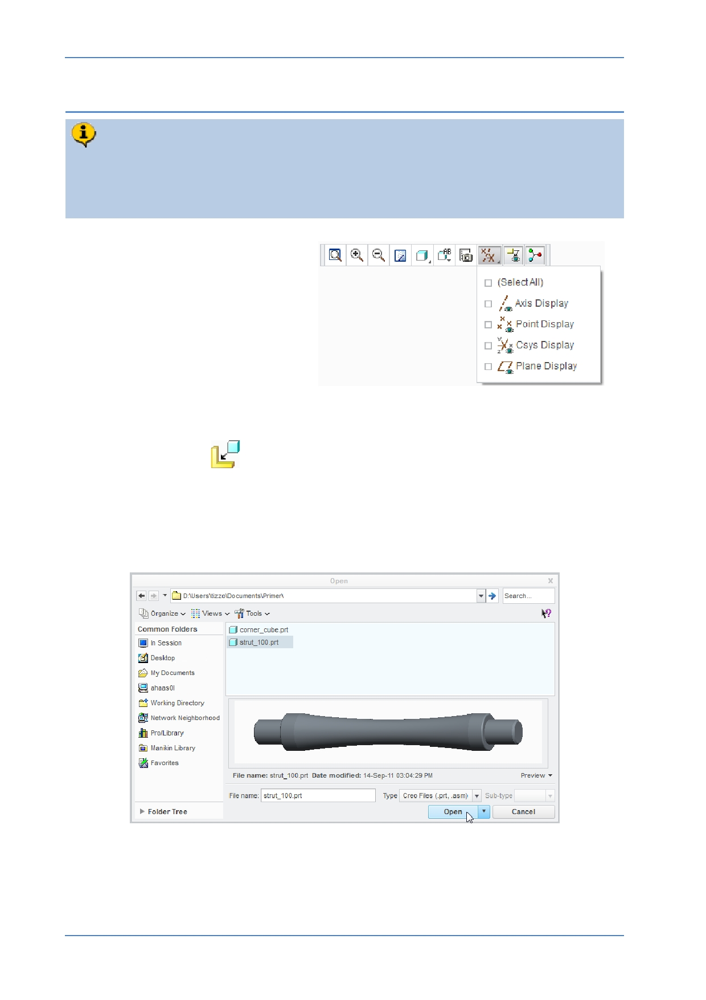

PTC Academic Program
Step 3: Add the first strut to the assembly
The second part you will add is a strut. You will position the strut by inserting the
the peg at the end of the strut into a hole in the cube. Then you will mate the
shoulder surface to the cube. This exactly replicates how you would assemble a
real strut and cube.
1. Disable the display of all
datum features.
2. Selecting the component to assemble:
Click Assemble
from the Component group of the Model tab.
In the Open dialog box:
o Select the STRUT_100.PRT model.
o Click Open to assemble this component.
© 2012 PTC
Creo Parametric 2.0 Primer
Page 69